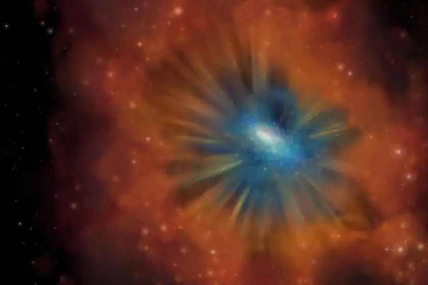

Science news ·
Astrophysicist announces her discovery that could rewrite story of how galaxies die
www.sciencedaily.com

At the annual meeting of the American Astronomical Society in St. Louis, Missouri, Allison Kirkpatrick, assistant professor of physics and astronomy at the University of Kansas, will announce her discovery of “cold quasars” — galaxies featuring an abundance of cold gas that still can produce new stars despite having a quasar at the center — a breakthrough finding that overturns assumptions about the maturation of galaxies and may represent a phase of every galaxy’s lifecycle that was unknown until now.
Her news briefing, entitled “A New Population of Cold Quasars,” takes place Wednesday, June 12.
A quasar, or “quasi-stellar radio source,” is essentially a supermassive black hole on steroids. Gas falling toward a quasar at the center of a galaxy forms an “accretion disk” which can cast off a mind-boggling amount of electromagnetic energy, often featuring luminosity hundreds of times greater than a typical galaxy. Typically, formation of a quasar is akin to galactic retirement, and it’s long been thought to signal an end to a galaxy’s ability to produce new stars.
“All the gas that is accreting on the black hole is being heated and giving off X-rays,” Kirkpatrick said. “The wavelength of light that you give off directly corresponds to how hot you are. For example, you and I give off infrared light. But something that’s giving off X-rays is one of the hottest things in the universe. This gas starts accreting onto the black hole and starts moving at relativistic speeds; you also have a magnetic field around this gas, and it can get twisted up. In the same way that you get solar flares, you can have jets of material go up through these magnetic field lines and be shot away from the black hole. These jets essentially choke off the gas supply of the galaxy, so no more gas can fall on to the galaxy and form new stars. After a galaxy has stopped forming stars, we say it’s a passive dead galaxy.”
But in Kirkpatrick’s survey, about 10 percent of galaxies hosting accreting supermassive black holes had a supply of cold gas remaining after entering this phase, and still made new stars.
“That in itself is surprising,” she said. “This whole population is a whole bunch of different objects. Some of the galaxies have very obvious merger signatures; some of them look a lot like the Milky Way and have very obvious spiral arms. Some of them are very compact. From this diverse population, we then have a further 10 percent that is really unique and unexpected. These are very compact, blue, luminous sources. They look exactly like you would expect a supermassive black hole to look in the end stages after it has quenched all of the star formation in a galaxy. This is evolving into a passive elliptical galaxy, yet we have found a lot of cold gas in these as well. These are the population that I’m calling ‘cold quasars.'”
The KU astrophysicist suspected the “cold quasars” in her survey represented a brief period yet to be recognized in the end-phases of a galaxy’s lifespan — in terms of a human life, the fleeting “cold quasar” phase may something akin to a galaxy’s retirement party.
“These galaxies are rare because they’re in a transition phase — we’ve caught them right before star formation in the galaxy is quenched and this transition period should be very short,” she said.
Kirkpatrick first identified the objects of interest in an area of the Sloan Digital Sky Survey, the most detailed digital map of the universe available. In an area dubbed “Stripe 82,” Kirkpatrick and her colleagues were able to visually identify quasars.
“Then we went over this area with the XMM Newton telescope and surveyed it in the X-ray,” she said. “X-rays are the key signature of growing black holes. From there, we surveyed it with the Herschel Space Telescope, a far infrared telescope, which can detect dust and gas in the host galaxy. We selected the galaxies that we could find in both the x-ray and in the infrared.”
The KU researcher said her findings give scientists new understanding and detail of how the quenching of star formation in galaxies proceeds, and overturns presumptions about quasars.
“We already knew quasars go through a dust-obscured phase,” Kirkpatrick said. “We knew they go through a heavily shrouded phase where dust is surrounding the supermassive black hole. We call that the red quasar phase. But now, we’ve found this unique transition regime that we didn’t know before. Before, if you told someone you had found a luminous quasar that had a blue optical color — but it still had a lot of dust and gas in it, and a lot of star formation — people would say, ‘No, that’s not the way these things should look.'”
Next, Kirkpatrick hopes to determine if the “cold quasar” phase happens to a specific class of galaxies or every galaxy.
“We thought the way these things proceed was you have a growing black hole, it’s enshrouded by dust and gas, it begins to blow that material out,” she said. “Then it becomes a luminous blue object. We assumed when it blew out its own gas, it would blow out its host gas as well. But it seems with these objects, that’s not the case. These have blown out their own dust — so we see it as a blue object — but they haven’t yet blown out all of the dust and gas in the host galaxies. This is a transition phase, let’s say of 10 million years. In universal timescales, that’s really short — and it’s hard to catch this thing. We’re doing what we call a blind survey to find objects we weren’t looking for. And by finding these objects, yes, it could imply that this happens to every galaxy.”
Story Source:
Materials provided by University of Kansas. Note: Content may be edited for style and length.